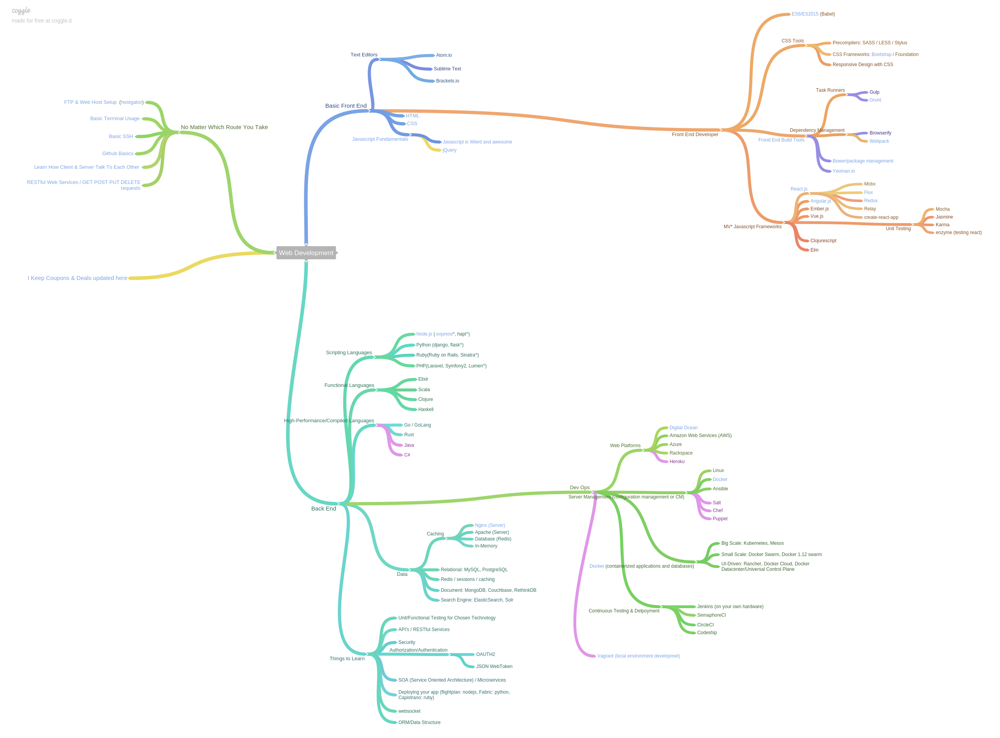

MUST-KNOW WEB DEVELOPMENT
Чем занимается современный фронтенд разработчик
- Что такое Front-End? Сравнение с Back-End. Почему эти два понятия всегда вместе?
- Должен ли фронтенд разработчик быть дизайнером?
- Должен ли фронтенд разработчик быть программистом?
- Должен ли фронтенд разработчик знать Back-End?
- Что можно создавать на веб технологиях?
2016/2017 MUST-KNOW WEB DEVELOPMENT TECH - Watch this if you want to be a web developer
